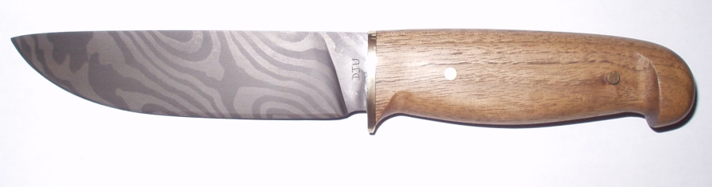
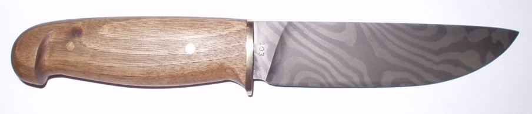

A 5 1/4 Inch Sheath Knife
May 2002
The blade has 18 layers of CS70 and O1 which I twisted to give a star twist pattern. The handle is walnut finished with danish oil. This was the first pattern welded blade that I was completely happy with. Unfortunately, the pattern wasn't visible so I etched it in ferric chloride.
